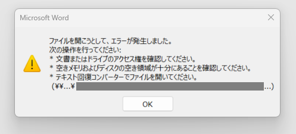
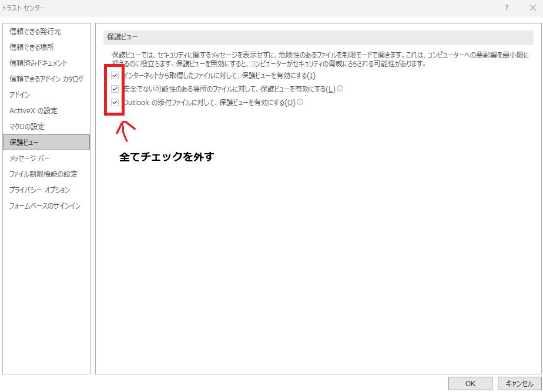

Wordでネットワークドライブ上の.docxファイルを開こうとした際に表示される
ファイルを開こうとして、エラーが発生しました。というエラーは、保護ビューの設定変更で回避できる場合があります。でも、用事が済んだら必ず元の設定へ戻そうね！
Wordを利用している環境で、Wordファイル（*.docx）を開こうとした際に、突然エラーが発生して文書を開けなくなることがあります。
特に企業のファイルサーバーやNAS上で文書を共有している環境ではたまに見られる現象であり、業務に支障をきたす場合があります。
本記事では、実際のエラーメッセージを紹介するとともに、考えられる原因と回避方法について解説します。ただ、結局大体は初手でWordの「保護ビュー」の設定を一時的に無効化してみることで解決することが多いです（後述）。
なお、Wordのバージョンや環境によっては、表示されるエラーメッセージが異なる場合があります。当方は、Word 2021および2019で当メッセージを確認しています。
画像から確認できるエラーメッセージは以下のとおりです。

ファイルを開こうとして、エラーが発生しました。
次の操作を行ってください:
* 文書またはドライブのアクセス権を確認してください。
* 空きメモリおよびディスクの空き領域が十分にあることを確認してください。
* テキスト回復コンバーターでファイルを開いてください。
(<<ここは開こうとしたファイルのパスが表示される>>)最下部には対象ファイルのパスが表示されていますが、画像内では一部がマスクしています。
このエラーメッセージはWordの汎用的なエラーであり、実際にはさまざまな原因で表示されます。
共有フォルダーや対象ファイルに対する読み取り権限が不足している場合、Wordはファイルを開けません。
以下のどちらか、あるいは両方に問題がある場合があります。
以下のような状況ではファイルの読み込みに失敗する場合があります。
対象の.docxファイルが破損している場合にも同様のエラーが表示されます。
例えば次のようなケースが考えられます。
別ユーザーが編集中であったり、編集管理用の一時ファイルが残ったままになっている場合があります。
例えば以下のような隠しファイルです。
~$文書名.docxこのファイルが残存していると正常に開けなくなることがあります。
ただ、この場合は「<<ユーザー名>>が編集中です」と表示されると思うので、通常はエラーとして発生しないはずです。なお、この場合であればユーザー名が表示されるので、該当のユーザーに連絡して編集中のファイルを閉じてもらうことであっさり解決します。
企業環境ではフォルダー階層が深くなりがちです。
\\Server\Share\部署\プロジェクト\年度\顧客名\成果物\・・・のような非常に長いパスの場合、Wordが正常に処理できないことがあります。
ランサムウェア対策や不正アクセス対策によって、ネットワーク共有上のOfficeファイルへのアクセスが制限される場合があります。
改善しない場合は、次の順番で確認すると効率的です。
対象ファイルをローカルへコピーする。
ローカルファイルを開く。
別PCまたは別ユーザーアカウントで開く。
Wordの機能である「ファイル修復コンバーター」を実行する。
ただし、修復コンバーターは破損したファイルを完全に復元できるわけではありません。テキスト内容の修復は可能ですが、レイアウトや画像などは復元できない場合があります。そのため、この方法は本当に「どうしても開けない場合の最終手段」として考えておくべきです。
企業環境で比較的多いのが、Wordの保護ビュー（Protected View）による制限です。
Wordにおける「保護ビュー」とは、インターネットやネットワーク共有上のファイルを開く際に、悪意のあるファイルから利用者を保護するための機能です。
ただ、この機能のせいでWordはネットワーク共有上のファイルを「信頼できない場所に存在するファイル」と判断する場合があります。
その結果として、
ファイルを開こうとして、エラーが発生しました。が表示され、文書を開けなくなることがあります。つまり、保護ビューの設定が原因である場合は、Wordの設定を変更することで回避できる可能性があります。個人的にはこのケースが、企業環境で発生する「ファイルを開こうとして、エラーが発生しました。」の大体の原因だと思います。
Wordの「トラストセンター」の設定から、「保護ビュー」の設定内容を変更することで回避できます。
ファイルを開かずにWordだけ起動します。
オプション＞トラストセンター＞トラストセンターの設定左側のメニューから
保護ビューを選択します。
保護ビュー設定における、以下のチェックをすべて外します。

環境によっては2番目の
安全でない可能性のある場所にあるファイルに対して保護ビューを有効にするのチェックを外すだけで改善する場合もあります。ただ、パッと確認したい場合は、まずはすべてのチェックを外してしまうのが手っ取り早いです。
設定変更後にWordを再起動し、対象ファイルを再度開きます。
この方法はセキュリティ設定を緩和する対応です。
保護ビューは悪意のあるファイルから利用者を保護するための機能であり、恒久的に無効化することは推奨されません。
そのため、ファイルの閲覧・編集などの用事が済んだら、必ず元の設定へ戻してください。
特に以下の環境では注意が必要です。
Wordでネットワークドライブ上の.docxファイルを開こうとした際に表示される
ファイルを開こうとして、エラーが発生しました。というエラーは、
など複数の要因によって発生します。
しかし、企業環境ではWordのトラストセンターにある「保護ビュー」が原因となっているケースが少なくありません。そのため、初手として「とりあえず保護ビューの設定を一時的に無効化してみる」というのは、手っ取り早くわりと確実な回避方法です。
ただし、この方法はセキュリティを緩和する設定変更であるため、用事が済んだら必ず元の設定へ戻すことを忘れないようにしましょう。